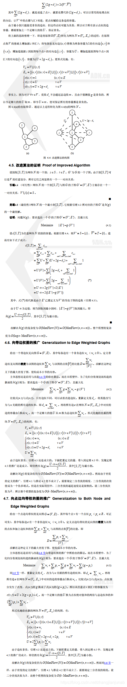

前言
前文申明：此博客主题内容是《胡伯涛: 最小割模型在信息学竞赛中的应用》中的部分内容。
但是因为此资料是本地资料，不知道原文地址在哪，且不知道怎么联系胡伯涛奆佬，所以标的是原创，还请谅解。
其实网络流还有不少技巧，比如说什么拆点拆边什么啦，但是都是一些比较小的技巧，等以后无聊了再统一的整理一下。
这里介绍两个网络流比较NB的模型。（觉得NB可能是因为我菜吧）
最大权闭合子图
例题
[六省联考2017]寿司餐厅：https://www.luogu.com.cn/problem/P3749
当时就想着用DP搞，结果死活搞不出那个m=1的做法
最大权闭合子图介绍
给你新的一道题目，有 $n$ 个点，每个点有个 $a$ 值，选了就会加上其 $a$ 值，那么很明显加上全部正的 $a$ 即可。
但是现在要求给你一些关系：选了 $x$ 必须选 $y$ 。
我们现在的 $ans$ 先加上所有的正数。
那么，考虑最小割，如果在最小割中割了 $x$ 和 $s$ 的边，表示不选 $x$ ，而割了 $x$ 和 $t$ 的边，然后需要注意的是，边权不是价值，而是代价，也就是需要从 $ans$ 中减去的东西。（当然，倒过来应该也没有问题。）
对于一个点 $i$ ，如果 $a_i>0$ ，则向 $S$ 连边权为 $a_i$ 的边，向 $t$ 连边权为 $0$ 的边，如果 $a_i≤0$ ，则向 $S$ 连边权为 $0$ 的边，向 $T$ 连边权为 $-a_i$ 的边。
好，那么如果选了 $x$ 必须选 $y$ ，就把 $x$ 向 $y$ 连一条边，边权为 $\infty$ ，为什么？
因为如果 $x$ 选了，割了与 $t$ 的边，$y$ 不选，割了与 $s$ 的边，那么就一定存在一条路径：$s->x->y->t$。
所以 $x$ 选了，$y$ 必须被选。
这就是最大权闭合子图。
做法
仔细一看，对于 $d_{i,j}$ 而言，选了其必须选择 $d_{i+1,j},d_{i,j-1}$，而对于 $d_{i,i}$ 而言，选了其必须删去 $i$ 的代号，而对于 $i$ ，如果其被选择，那么也要删去其代号的平方乘 $m$ 。
然后跑Dinic即可。
代码
时间复杂度：$O(MaxFlow(n,n+m))$
1
2
3
4
5
6
7
8
9
10
11
12
13
14
15
16
17
18
19
20
21
22
23
24
25
26
27
28
29
30
31
32
33
34
35
36
37
38
39
40
41
42
43
44
45
46
47
48
49
50
51
52
53
54
55
56
57
58
59
60
61
62
63
64
65
66
67
68
69
70
71
72
73
74
75
76
77
78
79
80
81
82
83
84
85
86
87
88
89
90
91
92
93
94
95
96
97
98
99
100
101
| #include<cstdio>
#include<cstring>
#define N 110
#define NN 12000
#define M 110000
using namespace std;
inline int mymin(int x,int y){return x<y?x:y;}
struct node
{
int y,next,c;
}a[M];int len=1,last[NN];
inline void ins_node(int x,int y,int c){len++;a[len].y=y;a[len].c=c;a[len].next=last[x];last[x]=len;}
inline void ins(int x,int y,int c){ins_node(x,y,c);ins_node(y,x,0);}
int list[NN],head,tail,h[NN],st,ed;
bool bfs()
{
memset(h,0,sizeof(h));h[ed]=1;
head=1;tail=1;list[1]=ed;
while(head<=tail)
{
int x=list[head++];
for(int k=last[x];k;k=a[k].next)
{
int y=a[k].y;
if(a[k^1].c && !h[y])
{
h[y]=h[x]+1;
list[++tail]=y;
}
}
}
return h[st];
}
int dinic(int x,int f)
{
if(x==ed)return f;
int s=0,t;
for(int k=last[x];k;k=a[k].next)
{
int y=a[k].y;
if(a[k].c && h[x]==h[y]+1)
{
s+=t=dinic(y,mymin(f-s,a[k].c));
a[k].c-=t;a[k^1].c+=t;
if(s==f)return s;
}
}
h[x]=0;
return s;
}
bool v[1100];
int ans=0;
inline void jian(int x,int v)
{
if(v>0)
{
ans+=v;
ins(st,x,v);
}
else if(v<0)ins(x,ed,-v);
}
int n,m,d[N][N];
int main()
{
scanf("%d%d",&n,&m);
st=n*n+n+1000+1;ed=st+1;
for(int i=1;i<=n;i++)
{
int x;scanf("%d",&x);
if(!v[x] && m)jian(n*n+x,-m*x*x),v[x]=1;
jian(n*n+1000+i,-x);
ins(n*n+1000+i,n*n+x,999999999);
}
for(int i=1;i<=n;i++)
{
for(int j=i;j<=n;j++)
{
scanf("%d",&d[i][j]);
jian((i-1)*n+j,d[i][j]);
}
}
for(int i=1;i<=n;i++)
{
for(int j=i;j<=n;j++)
{
if(i==j)ins((i-1)*n+j,n*n+1000+i,999999999);
else ins((i-1)*n+j,i*n+j,999999999),ins((i-1)*n+j,(i-1)*n+j-1,999999999);
}
}
while(bfs())
{
ans-=dinic(st,999999999);
}
printf("%d\n",ans);
return 0;
}
|
证明
如果从感性的角度上理解的话，就是利用最小割处理了一波最小化问题，花最小的代价使得我们选出的闭合图合法。
现在将问题简化，有$n$个点，$d_{i}$为第$i$个点的权值，一个有向图$G=(V,E)$，其中边$(u,v)$表示选了$u$必须选$v$。
我们的模型是：
$c(s,i)=d_{i}(d_i>0)$
$c(i,t)=-d_{i}(d_i<0)$
$c(i,j)=inf((i,j)∈ E)$
当然，推导的话是直接照搬胡伯涛论文中的内容，因为他写的确实很好。
最大密度子图


其实感觉点边均带权和不带权的推导式差不多的。
当然，至于不带权的边权图关于其中的精度问题我是有个想法的，因为也说了，精度是在 $\frac{1}{n^2}$ 的，所以其实可以把二分精度设在 $\frac{1}{2n^2}$ ，然后再结束之后 $O(nm)$ 把所有分母的取值枚举一一遍，如果误差在 $\frac{1}{2n^2}$ 以内，则就为这个值。（实际上可以用 $O(n)$ 或者各种优化加速此过程，反正我目前想到的最快的是 $O(n)$ ，暂时想不到更快的了。）
参考文献
洛谷题解
《胡伯涛: 最小割模型在信息学竞赛中的应用》
坑
补充例题。
加深对这个的学习。